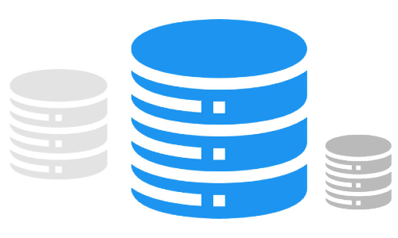
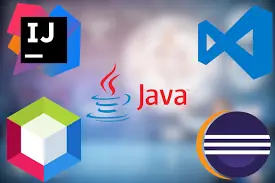
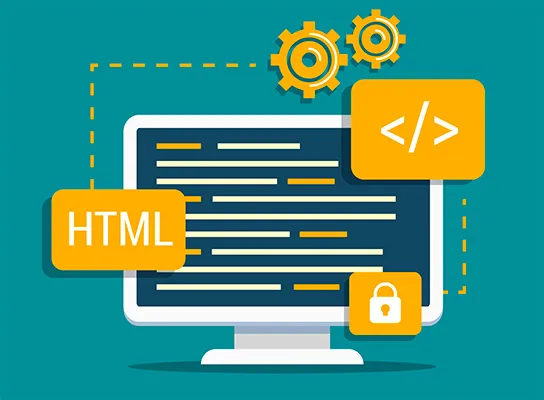
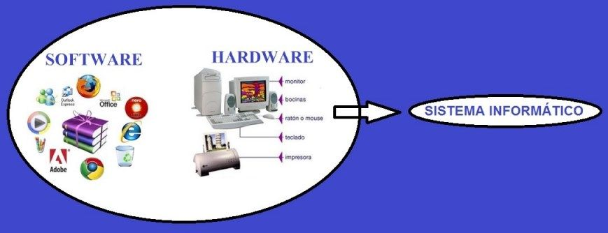

Información del ciclo formativo superior DAW(Desarrolo de aplicaciones Web)
Módulos de 1º año DAW(Desarrolo de aplicaciones Web)
Base de datos

Comprenderemos el uso de las bases de datos dentro de la programacion y el aprendizaje para
poder usarlas dentro de GDBDR
Basándonos en el artículo 29 del Decreto 327/2010, de 13 de julio, por el que se aprueba el Reglamento
orgánico de los Institutos de Educación Secundaria donde se define las programaciones didácticas .
Este módulo profesional contiene la formación necesaria para desempeñar funciones relacionadas con la
gestión de la información almacenada en bases de datos y el desarrollo de aplicaciones que acceden a bases
de datos.
Objetivos:
Ajustar la configuración lógica analizando las necesidades y criterios establecidos para configurar y
explotar sistemas informáticos.
Identificar las necesidades de seguridad verificando el plan preestablecido para aplicar técnicas y
procedimientos relacionados.
Instalar módulos analizando su estructura y funcionalidad para gestionar servidores de aplicaciones.
Ajustar parámetros analizando la configuración para gestionar servidores de aplicaciones.
Interpretar el diseño lógico, verificando los parámetros establecidos para gestionar bases de datos.
Seleccionar lenguajes, objetos y herramientas, interpretando las especificaciones para desarrollar
aplicaciones web con acceso a bases de datos.
Entornos de Desarrollo

Trataremos los distintos entornos de desarollo que existen y como tratarlos segun el
lenguaje de programacion.
La siguiente programación didáctica tratará de establecer los conceptos básicos teóricos y prácticos, así
como los objetivos que se pretenden alcanzar en el desarrollo del módulo de Entornos de Desarrollo que se
imparte en el primer curso del Ciclo Formativo de grado superior de Desarrollo de Aplicaciones
Multiplataforma, en su modalidad presencial y semipresencial.
Objetivos:
Reconoce los elementos y herramientas que intervienen en el desarrollo de un programa informático,
analizando sus características y las fases en las que actúan hasta llegar a su puesta en funcionamiento.
Evalúa entornos integrados de desarrollo analizando sus características para editar código fuente y
generar ejecutables.
Verifica el funcionamiento de programas diseñando y realizando pruebas.
Optimiza código empleando las herramientas disponibles en el entorno de desarrollo.
Genera diagramas de clases valorando su importancia en el desarrollo de aplicaciones y empleando las
herramientas disponibles en el entorno.
Genera diagramas de comportamiento valorando su importancia en el desarrollo de aplicaciones y
empleando las herramientas disponibles en el entorno.
FOL (Formación y orientación laboral)
Más formado para la vida laboral
El módulo de FOL se imparte en el primer curso de todos los títulos LOE. La presente programación está
realizada para el ciclo formativo de grado superior de Técnico Superior en Administración de Sistemas
Informáticos en Red.
Objetivos:
Selecciona oportunidades de empleo, identificando las diferentes posibilidades de inserción y las
alternativas de aprendizaje a lo largo de la vida.
Aplica las estrategias del trabajo en equipo, valorando su eficacia y eficiencia para la consecución de
los objetivos de la organización.
Ejerce los derechos y cumple las obligaciones que se derivan de las relaciones laborales,
reconociéndolas en los diferentes contratos de trabajo.
Determina la acción protectora del sistema de la Seguridad Social ante las distintas contingencias
cubiertas, identificando las distintas clases de prestaciones.
Evalúa los riesgos derivados de su actividad, analizando las condiciones de trabajo y los factores de
riesgo presentes en su entorno laboral.
Participa en la elaboración de un plan de prevención de riesgos en una pequeña empresa, identificando
las responsabilidades de todos los agentes implicados.
Aplica las medidas de prevención y protección, analizando las situaciones de riesgo en el entorno
laboral del técnico superior en Desarrollo de Aplicaciones Multiplataforma.
Lenguajes de marcas

Aprenderas a usar diferentes tipos de lenguajes de marcas y como son las etiquetas.
Uno de los primeros conceptos a considerar en una programación es el concepto de currículo, que según
contiene la Ley Orgánica 2/2006, de 3 de Mayo (LOE), en el Artículo 6, se entiende como “el conjunto de
objetivos, competencias básicas, contenidos, métodos pedagógicos y criterios de evaluación de cada una de
las enseñanzas reguladas”.
Se trata de aprender a usar los diferentes lenguajes de marcas actuales, que serian HTML5, CSS3 y
JavaScript
Objetivos:
La utilización de lenguajes de marcado en el tratamiento y transmisión de la información.
La publicación y difusión de información mediante tecnologías de sindicación de contenidos.
La caracterización de la información transmitida y almacenada.
La adaptación de la información a las tecnologías utilizadas en su presentación, transmisión y
almacenamiento.
El almacenamiento y recuperación de la información.
Generar componentes de acceso a datos, cumpliendo las especificaciones, para integrar contenidos en la
lógica de una aplicación web.
Establecer procedimientos, verificando su funcionalidad, para desplegar y distribuir aplicaciones.
Analizar y utilizar los recursos y oportunidades de aprendizaje relacionadas con la evolución
científica, tecnológica y organizativa del sector y las tecnologías de la información y la comunicación,
para mantener el espíritu de actualización y adaptarse a nuevas situaciones laborales y personales.
La implantación y adaptación de sistemas de gestión empresarial.
Programación
Aprenderas diferentes tipos de de control de datos y tomas de decisiones
La nueva Formación Profesional ofrece una respuesta eficaz y competente a las necesidades del actual mundo
laboral, con un esquema flexible que permite la adecuación a los cambios tecnológicos que están
experimentando los diferentes procesos productivos. El Ciclo Formativo correspondiente al título de Técnico
Superior en Desarrollo de Aplicaciones Web está regulado por los siguientes documentos:
Objetivos:
La interpretación y aplicación de los principios de la programación orientada a objetos.
Utilizar conjuntos de datos acorde a las normas establecidas
Aprender que es un lenguaje de programacion y como estos fueron creados
La evaluación, selección y utilización de herramientas y lenguajes de programación orientados a objetos.
La utilización de las características específicas de lenguajes y entornos de programación en el
desarrollo de aplicaciones informáticas.
Sistemas informáticos

Control basicos de sistemas que serviran para desempeñar un minimo como informatico
Este módulo profesional contiene la formación necesaria para desempeñar funciones que permitan la
instalación, mantenimiento, configuración básica y explotación de sistemas operativos, así como las
aplicaciones oportunas a partir de documentación técnica prestando especial atención a la configuración
básica y gestión de redes de área local.
Objetivos:
La identificación del hardware.
El análisis de los cambios y novedades que se producen en los sistemas informáticos: hardware, sistemas
operativos, redes y aplicaciones.
La utilización de máquinas virtuales para simular sistemas.
La correcta interpretación de documentación técnica.
La instalación y actualización de sistemas operativos.
Módulos de 2º año DAW(Desarrolo de aplicaciones Web)
Desarrollo web en entorno cliente
Todo sobre la parte del cliente
El diseño curricular del módulo profesional de Desarrollo Web en Entorno Cliente (DWEC) correspondiente al
segundo curso del Ciclo formativo de Grado Superior de Técnico Superior en Desarrollo de aplicaciones Web
viene recogido en la Orden de 16 de Junio de 2011 (BOJA149 de 1 de agosto de 2011), y que a su vez está
basado en el Real Decreto 666/2010, de 20 de mayo. Este módulo profesional contiene parte de la formación
necesaria para desempeñar las funciones necesarias
para el desarrollo de aplicaciones destinadas a su ejecución por navegadores en entornos web.
Objetivos:
Evaluar servicios distribuidos ya desarrollados, verificando sus prestaciones y funcionalidad, para
integrar servicios distribuidos en una aplicación web.
La utilización de las características específicas de lenguajes y entornos de programación en el
desarrollo de aplicaciones para clientes web.
Utilizar herramientas específicas, cumpliendo los estándares establecidos, para elaborar y mantener la
documentación de los procesos.
Seleccionar lenguajes, objetos y herramientas, interpretando las especificaciones para desarrollar
aplicaciones web con acceso a bases de datos.
Utilizar lenguajes, objetos y herramientas, interpretando las especificaciones para desarrollar
aplicaciones web con acceso a bases de datos.
Emplear herramientas y lenguajes específicos, siguiendo las especificaciones, para desarrollar
componentes multimedia.
Utilizar herramientas y lenguajes específicos, cumpliendo las especificaciones, para desarrollar e
integrar componentes software en el entorno del servidor web.
Desarrollo web en entorno servidor
Todo sobre la parte del servidor
Este módulo profesional contiene la formación necesaria para implementar el desarrollo de aplicaciones y
servicios destinados a su ejecución por servidores en entornos Web.
La duración del módulo es de 80 horas lectivas, a lo largo de los dos primeros trimestres del curso
impartiéndose 4 horas semanales.
Objetivos:
El análisis de los métodos de generación dinámica de documentos Web..
La integración del lenguaje de marcas con el código ejecutable en el servidor Web.
La integración del lenguaje de marcas con el código ejecutable en el servidor Web.
El análisis, diferenciación y clasificación de las características y funcionalidades incorporadas en los
entornos y lenguajes de programación de los servidores Web más difundidos.
La utilización de características y funcionalidades específicas de los lenguajes de programación
seleccionados.
Despliegue de aplicaciones web
Desplegar esas apps que hacen falta para echar andar tu web
El módulo Despliegue de Aplicaciones Web, se encuadra en el segundo curso del Ciclo Formativo
correspondiente al título Técnico Superior en Desarrollo de Aplicaciones Web.
Se trata de un módulo que relacionado con la mayoría de módulos del curso principalmente con el de
Desarrollo Web en Entorno Servidor.
La duración del módulo es de 80 horas lectivas, a lo largo de los dos primeros trimestres del curso
impartiéndose 4 horas semanales.
Objetivos:
La instalación y configuración básica de servidores web y de aplicaciones.
La implantación de aplicaciones web sobre servidores de aplicaciones.
La instalación y configuración de servicios de red implicados en el proceso de implantación.
La instalación, configuración y uso de sistemas de control de versiones.
La utilización de sistemas operativos libres y propietarios.
Diseño de interfaces WEB
Aprenderás a diseñar
módulo profesional de Diseño de Interfaces Web correspondiente al segundo curso del Ciclo formativo de
Grado Superior de Técnico Superior en Desarrollo de aplicaciones Web viene recogido en la ORDEN 60/2012, de
25 de septiembre y a su vez por el Real Decreto 686/2010, de 20 de mayo,
Objetivos:
El análisis de la interfaz de diferentes sitios Web.
La identificación de los elementos de la interfaz.
La integración de contenido multimedia e interactivo en documentos Web.
La evaluación de la accesibilidad y usabilidad de la Web.
La utilización de estilos.
La integración de la interfaz en la aplicación Web
Empresa e iniciativa emprendedora
Ayuda a saber emprender
Empresa e Iniciativa Emprendedora (EIE) es un módulo profesional contemplado en el currículo de todos los
nuevos títulos de formación profesional, tanto de grado medio como superior, establecido en la Ley Orgánica
2/2006 de Educación (LOE).
El módulo de EIE se imparte en el segundo curso de todos los títulos LOE. Tiene una carga horaria de 66
horas lectivas, distribuidas en tres sesiones por semana.
Esta programación recoge lo que serían las bases para la programación anual del departamento de F.O.L.
Objetivos:
El manejo de las fuentes de información sobre el sector de la informática.
La realización de casos y dinámicas de grupo.
La utilización de programas de gestión administrativa para pymes del sector.
Evaluar situaciones de prevención de riesgos laborales y de protección ambiental, proponiendo y
aplicando medidas de prevención personales y colectivas, de acuerdo a la normativa aplicable en los
procesos del trabajo, para garantizar entornos seguros.
La realización de un proyecto de plan de empresa.
FCT (Formación en centros de trabajo)
Prácticas de empresa
La Formación en Centros de Trabajo (FCT) es un módulo profesional de formación obligatorio que se cursa en
todas las enseñanzas de Formación Profesional.
Objetivos:
Identificación de la estructura y organización empresarial.
Aplicación de hábitos éticos y laborales.
Organización de trabajos.
Gestión de equipos y sistemas informáticos.
Gestión de bases de datos y servidores de aplicaciones.
Desarrollo y despliegue de aplicaciones web.
Desarrollo y pruebas de interfaz web.
Proyecto de desarrollo de aplicaciones web
Proyecto de fin de formación
El módulo profesional de Proyecto de los Ciclos Formativos de Grado Superior tiene por objeto la
integración de las diversas capacidades y conocimientos del currículo del ciclo formativo, tanto en sus
aspectos laborales, como del ejercicio profesional y de la gestión empresarial.
El Proyecto será de temática libre y consistirá en la creación de un producto terminado, abarcando todas las
fases de desarrollo.
Objetivos:
Análisis de necesidades del sector.
Propuesta de diseño de un proyecto concreto que de respuesta a dichas necesidades.
Desarrollo del proyecto.
Conclusiones: opciones de mejora, dificultades encontradas, valoración personal, análisis de
sostenibilidad, etc